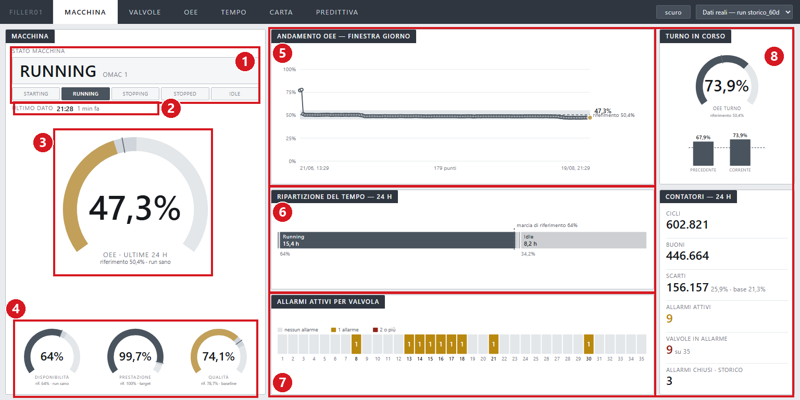
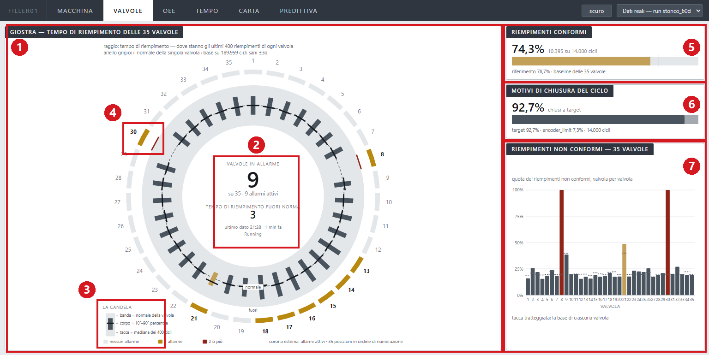
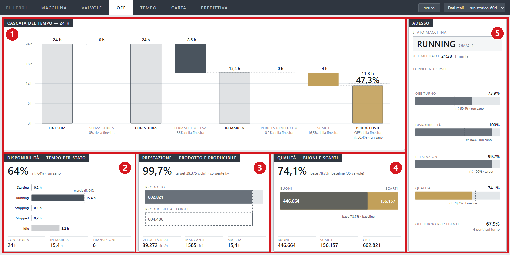
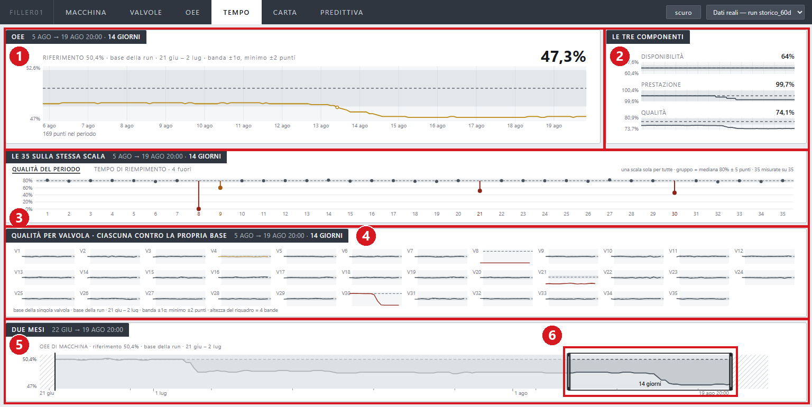
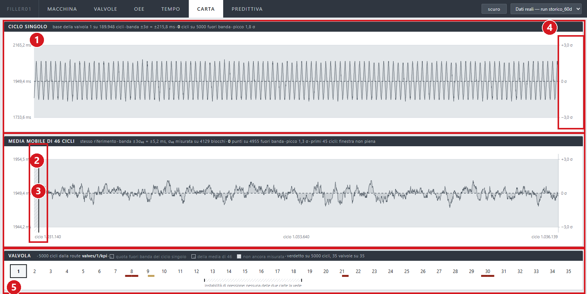
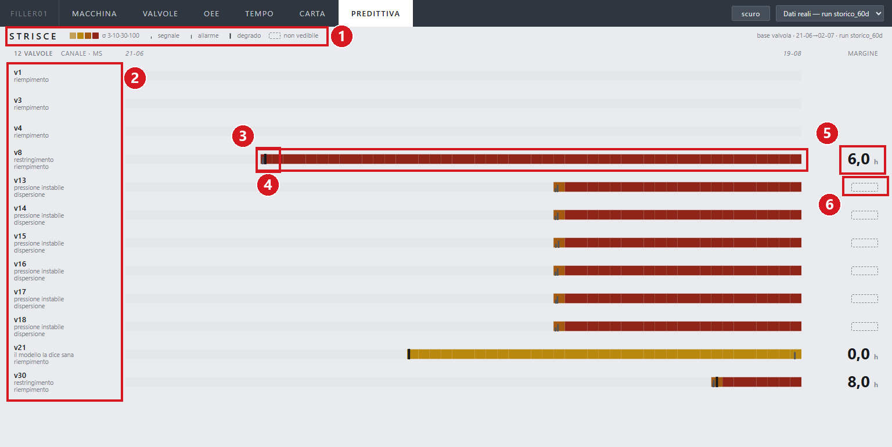
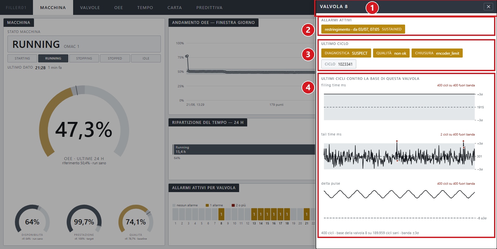
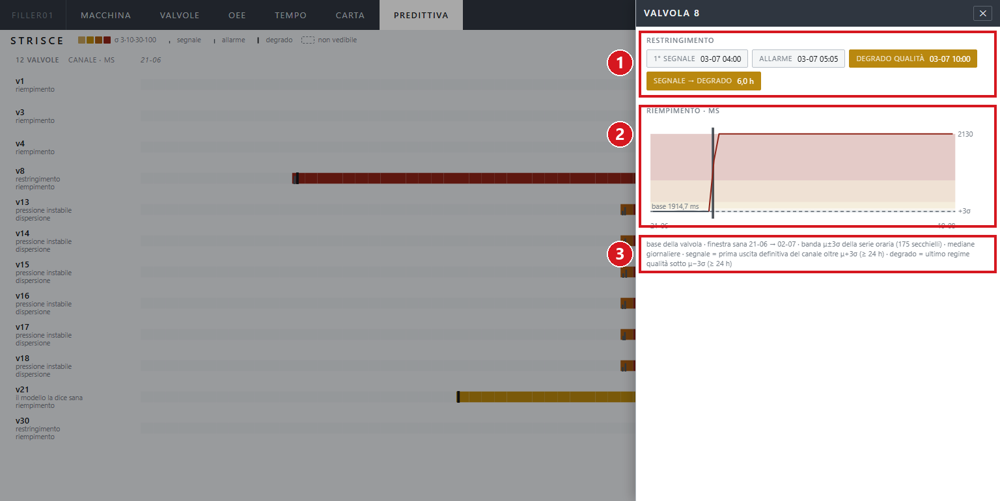

FillerStack · riempitrice rotativa · 35 valvole
Come si leggono le sei pagine, i grafici e gli elementi che le compongono.
Questo manuale spiega come leggere la dashboard di supervisione. Non serve conoscere la macchina né il software che la misura: ogni elemento a schermo è spiegato con una figura annotata e una tabella.
dashboard.bat. Si apre da sola
sulla pagina Macchina.Risponde a: la macchina sta lavorando, e con che esito? È la pagina di apertura.

| N. | Elemento | Indicazione |
|---|---|---|
| 1 | Stato macchina | La parola grande è lo stato attuale, col codice OMAC a fianco. OMAC è la numerazione standard degli stati di una macchina di produzione. Sotto, la scala degli stati possibili evidenzia quello corrente. |
| 2 | Ultimo dato | Orario dell'ultimo ciclo arrivato e da quanto. Diventa giallo solo se la macchina è in marcia e il dato ha più di cinque minuti: in quel caso l'acquisizione si è fermata. |
| 3 | OEE · ultime 24 h | Il gauge grande. L'OEE è la quota di tempo in cui la macchina produce, e produce bene. La tacca è il 50,4% misurato sul run sano. Sopra la tacca il numero resta grigio: superare il riferimento non è un evento. |
| 4 | Disponibilità, Prestazione, Qualità | Le tre componenti che moltiplicate danno l'OEE. Ognuna col suo riferimento: 64% dal run sano, 100% come target, 78,7% come base misurata sulle 35 valvole. |
| 5 | Andamento OEE | L'OEE come linea nel tempo, con banda e tacca. I pallini compaiono solo dove la linea entra o esce dalla banda. |
| 6 | Ripartizione del tempo | Quante delle 24 ore la macchina ha passato in ogni stato. La tacca segna il 64% di marcia del run sano. Gli stati sono tutti grigi: una macchina ferma per scelta non è un allarme. |
| 7 | Allarmi attivi per valvola | 35 celle numerate. Grigio: nessun allarme. Giallo: un allarme. Rosso: due o più. Il clic sulla cella apre il pannello della valvola (capitolo 7). |
| 8 | Turno in corso e Contatori | L'OEE del turno contro il turno precedente, e i conti delle 24 ore: cicli, buoni, scarti, allarmi. Gli scarti portano la base del 21,3%: è lo scarto che questa macchina ha anche da sana. |
Se l'OEE del turno non è calcolabile (zero cicli nel turno), il gauge diventa tratteggiato e compare la scritta non calc.. Non è un errore della pagina.
Risponde a: quale valvola merita attenzione? La giostra è vista dall'alto, con le 35 valvole nelle loro posizioni fisiche: la 1 in alto, poi in senso orario.

| N. | Elemento | Indicazione |
|---|---|---|
| 1 | La giostra | Una candela per valvola: dove sono caduti gli ultimi 400 tempi di riempimento. Si legge dentro o fuori, non lunga o corta. |
| 2 | Mozzo centrale | I conti di macchina: quante valvole in allarme su 35, quante fuori norma, l'età dell'ultimo dato, lo stato macchina. |
| 3 | Legenda della candela | La banda è il normale della singola valvola (base sui cicli sani, ±3σ). Il corpo va dal 10° al 90° percentile, la tacca trasversale è la mediana dei 400 cicli. |
| 4 | Corona esterna | Gli allarmi attivi, nella posizione fisica della valvola. Stessa legenda di Macchina: grigio nessuno, giallo uno, rosso due o più. |
| 5 | Riempimenti conformi | La quota di cicli buoni sulle 35 valvole, contro il riferimento 78,7% della baseline. |
| 6 | Motivi di chiusura del ciclo | Come si sono chiusi i cicli: sul bersaglio (target), sul limite dell'encoder, per timeout. Tutto grigio di proposito: è una ripartizione, non un allarme. |
| 7 | Riempimenti non conformi | Una barra per valvola contro la propria base, che è la tacca tratteggiata sulla barra. Le valvole 9 e 21 arrivano alla propria tacca senza colorarsi: sbagliano da sempre, e quello è il loro normale. |
Passando il mouse su una valvola della giostra si apre un riquadro con il nome del guasto e le cinque grandezze del ciclo confrontate con la base. Il clic apre il pannello di dettaglio (capitolo 7).
Risponde a: perché l'OEE è quello che è? Scompone le 24 ore fino all'ultimo minuto.

| N. | Elemento | Indicazione |
|---|---|---|
| 1 | Cascata del tempo | Si legge da sinistra: dalle 24 ore si tolgono la parte senza storia, le fermate, la perdita di velocità e gli scarti, e resta il tempo produttivo. Sopra ogni colonna le ore, sotto la percentuale della finestra. L'ultima colonna porta il numero grande dell'OEE con la tacca del 50,4% del run sano. |
| 2 | Disponibilità · tempo per stato | Una riga per stato OMAC. Gli stati mai visti restano tratteggiati con scritto non osservato nella finestra. |
| 3 | Prestazione | Due barre alla stessa scala: i cicli prodotti, piena, e quelli producibili al target, tratteggiata. Qui quasi coincidono: questa macchina perde tempo da ferma, non da lenta. |
| 4 | Qualità | Buoni e scarti in numeri assoluti. La tacca segna dove cadrebbe il confine alla qualità sana del 78,7%. |
| 5 | Adesso | Stato macchina, età del dato, il turno in corso con le sue quattro barre e il confronto col turno precedente. |
Senza storia non è una perdita. È la parte di finestra di cui il sistema non conosce lo stato della macchina. Resta grigia perché non è tempo perso: è tempo non osservato.
Risponde a: com'è andata, e quando? In fondo c'è la striscia dei due mesi; la finestra che trascini lì decide cosa vedono tutti i riquadri sopra.

| N. | Elemento | Indicazione |
|---|---|---|
| 1 | OEE | L'OEE nel periodo scelto contro il riferimento, con banda ±1σ e minimo dichiarato di ±2 punti. Il numero grande in alto a destra è l'ultimo OEE del periodo. |
| 2 | Le tre componenti | Disponibilità, Prestazione e Qualità sullo stesso asse del tempo. Restano grigie anche quando si muovono: il colore sta solo sul grafico principale. |
| 3 | Le 35 sulla stessa scala | Una colonna per valvola contro la mediana del gruppo, in ordine di macchina e non di merito. Il gambo che scende dalla mediana è la distanza dalle altre 34. L'interruttore in alto cambia il metro: qualità del periodo oppure tempo di riempimento. La voce spenta dice già quante valvole sarebbero fuori con quell'altro metro (4 fuori). |
| 4 | Qualità per valvola | 35 piccole celle, ciascuna contro la propria base. Qui il confronto è con sé stesse; nel riquadro sopra è con le altre. Servono tutti e due: le valvole 9 e 21 contro sé stesse risultano normali. |
| 5 | La striscia dei due mesi | L'OEE di macchina su tutta la run. I tratti tratteggiati in testa e in coda sono zone senza dato confrontabile, e la finestra non può entrarci. |
| 6 | La finestra | Il rettangolo con due maniglie. Trascina dentro per spostarla, trascina le maniglie per ridimensionarla (minimo sei ore), clicca fuori per centrarla sul clic, rotellina per lo zoom. La durata scelta è scritta dentro la finestra. |
Cliccando una colonna o una cella si apre il pannello della valvola, con il profilo del ciclo medio disegnato con tre soli punti misurati: apertura, fine riempimento, fine coda. Contro la sagoma tratteggiata della base, con lo scarto riempito fra le due.
Risponde a: quanto è fuori misura? Una valvola alla volta, 5.000 cicli, una grandezza sola: il tempo di riempimento.

| N. | Elemento | Indicazione |
|---|---|---|
| 1 | Ciclo singolo | Ogni ciclo è un punto. La banda è la media ±3σ della base della valvola, la linea tratteggiata è la media. L'area fra la linea e la media è riempita: la differenza sta lì. |
| 2 | Media mobile di 46 cicli | La stessa carta sulla media di 46 cicli, il periodo dell'oscillazione naturale della macchina. La banda si stringe da ±215,8 ms a ±5,2 ms, e i gradini lenti che nella prima carta spariscono qui si vedono. |
| 3 | Primi 45 cicli | Nella seconda carta i primi 45 cicli sono tratteggiati: la finestra mobile non è ancora piena e quel tratto non è un dato confrontabile. |
| 4 | Asse sigma | A destra, in σ: dice quanto il punto è fuori. A sinistra, in millisecondi. Se il picco supera 4σ il valore appare in grassetto e colorato. |
| 5 | La striscia delle 35 | Una cella per valvola. Sotto il numero, una riga divisa a metà: a sinistra quanto sta fuori la carta del ciclo singolo, a destra quella della media di 46. Il clic cambia la valvola delle due carte. Sotto le valvole 13-18 un segno dichiara che l'instabilità di pressione non la vede nessuna delle due carte. |
Il mirino è uno solo: passando il mouse, lo stesso ciclo si accende sulle due carte insieme e il riquadro mostra entrambi i valori.
Risponde a: quanto tempo resta prima che un guasto in corso rovini il prodotto? Una riga per valvola: quelle in allarme più tre sane di campione.

| N. | Elemento | Indicazione |
|---|---|---|
| 1 | Legenda | La scala dei colori ai gradini 3·10·30·100σ di scostamento dalla base, e i tre segni: tacca bassa = segnale, tacca alta = allarme, sbarra piena = degrado. Il riquadro tratteggiato vuol dire non vedibile. |
| 2 | Etichette | Per ogni riga: il numero della valvola, il nome del guasto previsto dal modello e il canale fisico guardato (riempimento, coda, dispersione o qualità). Il modello la dice sana vuol dire che l'allarme c'è ma il modello non concorda. |
| 3 | La striscia | Una colonna al giorno per due mesi. Il colore dice di quanto il canale fisico si è allontanato dal normale di quella valvola: grigio fino a 3σ, poi i gradini della legenda. |
| 4 | Le tacche | I tre momenti piantati sopra la striscia: il primo segnale (prima uscita definitiva oltre le 3σ), l'apertura dell'allarme, il degrado della qualità. |
| 5 | Il margine | Il numero grande, in ore: quanto passa fra il primo segnale e il degrado. È il tempo che hai per intervenire mentre il prodotto è ancora buono. |
| 6 | Il vuoto tratteggiato | Se il canale non esce mai dal regime sano, il margine non esiste e al suo posto c'è scritto non vedibile. Sulle tre valvole sane di campione non c'è nessun margine: non c'è niente da prevedere. |
Il clic sulla riga apre il pannello con il grafico del canale e le date dei tre momenti (capitolo 7). Passando il mouse sulla striscia, il riquadro dice il valore del giorno e di quanto è oltre la banda.
Cliccando una valvola si apre un pannello sopra la pagina. Si chiude con la ✕, con Esc o cliccando il fondo scuro, e si torna dove si era.

| N. | Elemento | Indicazione |
|---|---|---|
| 1 | Testata | Il numero della valvola e la ✕ per chiudere. |
| 2 | Allarmi attivi | Un chip per allarme: il nome del guasto, da quando, e lo stato. Il nome arriva dalla previsione del modello, non dal registro dell'allarme. |
| 3 | Ultimo ciclo | Diagnostica, esito di qualità, motivo di chiusura e numero di ciclo. |
| 4 | Ultime 400 cicli contro la base | Tre carte di controllo: tempo di riempimento, tempo di coda, scarto impulsi. La banda è la base della singola valvola, ±3σ. Il contatore in alto a destra dice quanti cicli sono fuori banda. |

| N. | Elemento | Indicazione |
|---|---|---|
| 1 | I tre momenti | Un chip per momento con la data: primo segnale, allarme, degrado. Sotto, il margine segnale → degrado in ore. |
| 2 | Grafico del canale | L'andamento del canale fisico nei due mesi. Oltre la banda ci sono le zone di deriva colorate ai gradini 3·10·30·100σ, e la linea si colora della zona che attraversa. |
| 3 | Nota a piè | La provenienza di tutto: finestra sana, ampiezza della banda, e le definizioni di segnale e degrado. |